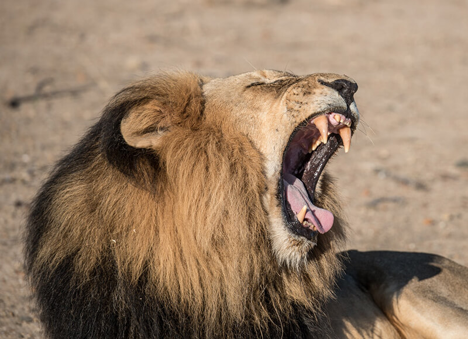
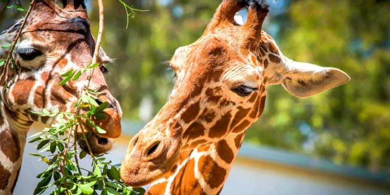
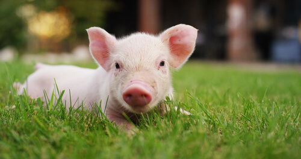
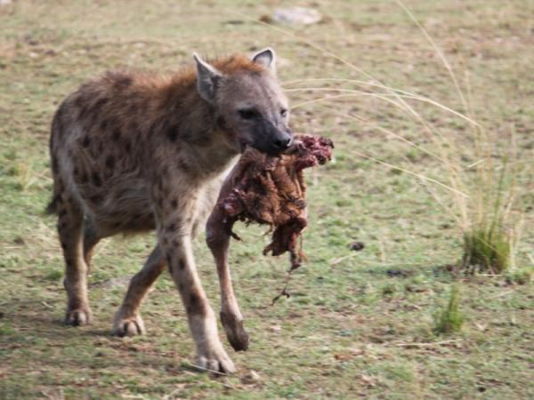

¿Cuáles son los animales terrestres?
Los animales terrestres son los animales que viven en la tierra, por ejemplo: los desiertos, las selvas, los llanos, también casas y granjas. Hay cuatro tipos de animales terrestres son los carnívoros, los herbívoros, los omnívoros y también se encuentran los carroñeros.
Los tipos de animales terrestres son:
- Carnívoros
- Herbívoros
- Omnívoros
- Carroñeros
| Los Carnívoros | Los Herbívoros | Los Omnívoros | Los carroñeros |
|---|---|---|---|
| Se alimentan únicamente de carne de animales y de personas, los animales carnívoros son muy peligrosos estos animales matan únicamente cuando se sienten hambrientos, nunca van a atacar por deseo de matar. | Comen plantas, hojas, pasto, etc. La mayoría de los animales herbívoros no atacan, solo si se sienten amenazados. | Comen carne y vegetales son animales que pueden comer de todo. | Son los animales que comen restos de otros animales muertos después de que un animal carnívoro ya se haya alimentado de dicho animal. |
|  |  |  |  |